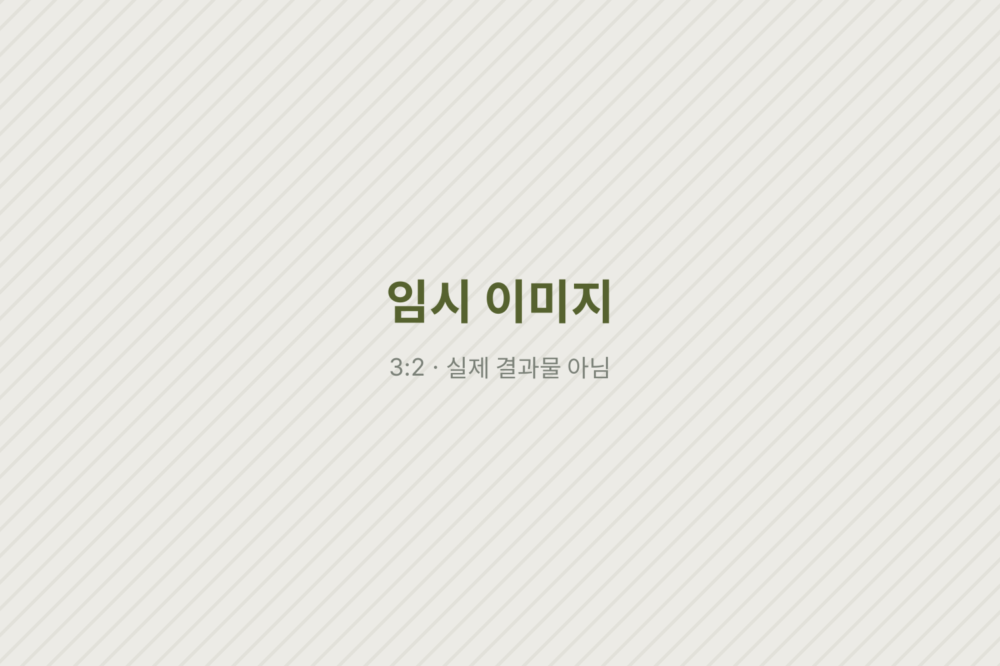

임시 시안 · 이 페이지의 글·이미지·영상은 레이아웃 확인용 더미입니다. 실제 원고와 결과물로 바뀔 예정입니다.
(5) · Two Rabbits · Campaign / Production
브랜드 캠페인 제작·운영
왜 카피라이터의 일은 카피에서 끝나야 할까?
카피는 한 줄로 끝나지만 캠페인은 그 한 줄이 영상과 KV, 매체에 실려 고객에게 닿을 때까지 이어진다. 광고대행사 투래빗츠에서 맡은 브랜드 캠페인의 제작과 운영을 정리한다. (임시 도입문)
Situation한 줄 다음에 오는 일들
카피라이터의 일은 흔히 문장을 쓰는 데서 끝난다고 여겨진다. 하지만 그 문장이 영상의 자막이 되고 KV의 헤드라인이 되어 실제로 출고되기까지는 수많은 확인과 조율이 남는다. (임시 원고)
이 문단에는 맡은 캠페인들이 어떤 상황에서 시작됐는지, 공개 가능한 범위 안에서 적는다.
Solution카피에서 출고까지
다이슨 국내 론칭 IMC(2025–2026)에서는 카피 개발, 영상 비주얼 검수, 최종 출고를 맡았다.
이 문단에는 영상과 KV에서 카피가 어떻게 쓰였는지, 검수 과정에서 무엇을 지켰는지가 들어간다. 공개된 결과물만 다룬다. (임시 원고)


삼양에서는 글로벌 브랜드 가이드 제작을, IGIN에서는 론칭 캠페인 운영을 맡았다.

Result브랜드의 말로 끝까지
결과 단락에는 공개 가능한 성과와, 카피에서 출고까지 이어지는 일을 하며 배운 것이 들어간다. 클라이언트 정보는 공개된 범위만 적는다. (임시 원고)